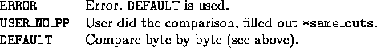

int user_same_cuts (void *user, cut_data *cut1, cut_data *cut2, int *same_cuts)
Determine whether the two cuts are comparable (the normals of the half-spaces corresponding to the cuts point in the same direction) and if yes, which one is stronger. The default is to declare the cuts comparable only if the type, sense and coef fields of the two cuts are the same byte by byte; and if this is the case to compare the right hand sides to decide which cut is stronger.


This function is used to check whether a newly arrived cut is already in the local pool. If so, or if it is weaker than a cut in the local pool, then the new cut is discarded; if it is stronger then a cut in the local pool, then the new cut replaces the old one and if the new is different from all the old ones, then it is added to the local pool.